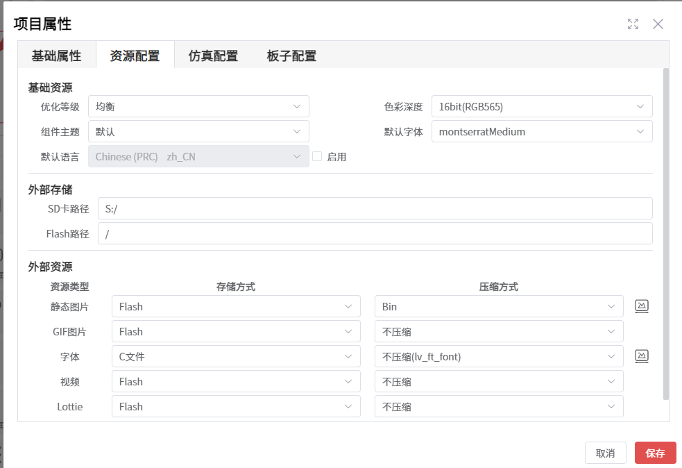
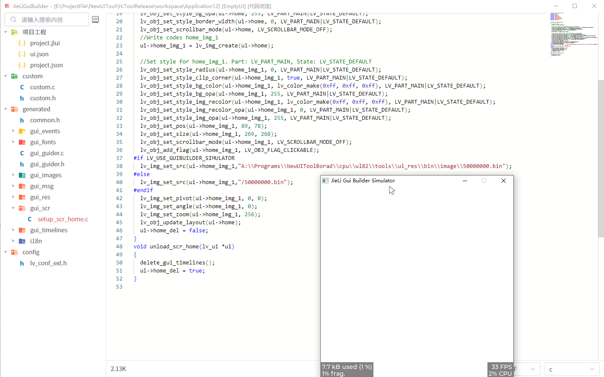
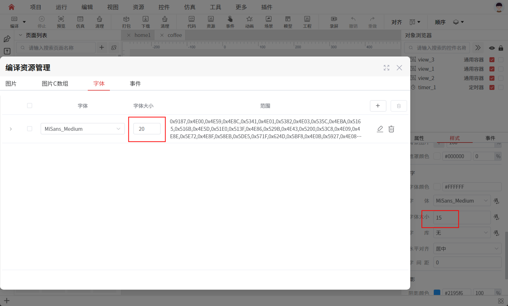
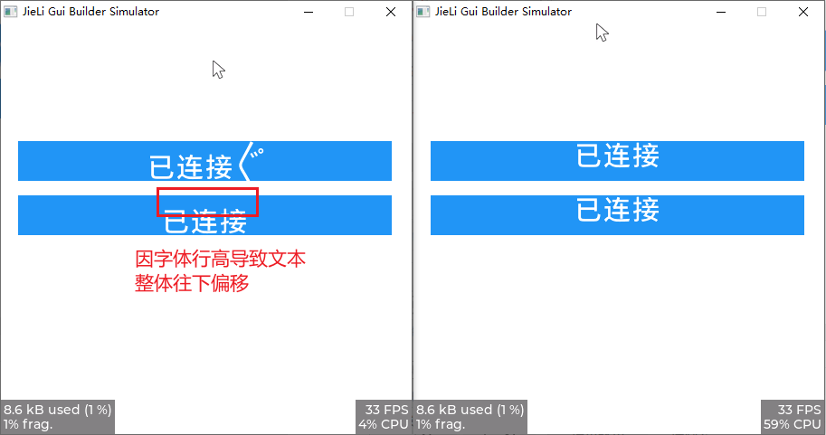

仿真问题
本章目录
- 1. 图片控件设置了图片，但是编译仿真后没有显示图片
- 2. 如何区分是键盘还是鼠标触发的 Click 事件
- 3. 仿真程序启用性能/内存监控
- 4. 打包资源时，出现 Unable to load image file 错误
- 5. 仿真出现闪退现象，例如新添菜单后点击菜单时仿真闪退
- 6. 控件使用 bmp 图片资源，图片不显示
- 7. 控件使用 16 位深的 bmp 图片资源，图片显示异常
- 8. 顶层页面 Gesture 事件无法触发
- 9. 使用字库中新添加的字体时，仿真出现字体不一致、乱码
- 10. 标签控件的文本出现往下偏移的问题
本章正文
图片控件设置了图片，但是编译仿真后没有显示图片
- 原因：没有设置图片路径，或者图片文件不存在。
- 解决方案：通过检查生成代码，检查图片路径是否正确，图片文件是否存在，是否需要先打包工程，再编译仿真。
下面这种情况，工程设置了图片路径，但是因为将静态图片的压缩方式设置为 Bin ,在编译前，没有先进行打包，导致图片文件没有正常生成，所以图片文件不存在无法正常显示。


提示
当设置静态图片的压缩方式设置为 Bin 时，如果对控件图片进行了修改，或者在 编译资源管理 中进行了图片资源的增删，需要先进行打包，再编译仿真。
如何区分是键盘还是鼠标触发的 Click 事件
- 解决方法：通过判断事件参数，来区分是键盘还是鼠标触发的
Click事件。
lv_indev_t * act_indev = lv_indev_get_act();
lv_indev_t * event_indev = (lv_indev_t *)lv_event_get_param(e);
if (act_indev && act_indev == event_indev) {
lv_indev_type_t type = lv_indev_get_type(act_indev);
if (type == LV_INDEV_TYPE_ENCODER) {
LV_LOG_WARN("encoder click");
} else if (type == LV_INDEV_TYPE_KEYPAD) {
LV_LOG_WARN("keypad click");
} else if (type == LV_INDEV_TYPE_BUTTON) {
LV_LOG_WARN("button click");
} else if (type == LV_INDEV_TYPE_POINTER) {
LV_LOG_WARN("pointer click");
}
}
仿真程序启用性能/内存监控
- 解决方法：在
项目->项目属性->仿真配置中启用实时性能监控、实时内存监控。
提示
- 启用
实时性能监控、实时内存监控本质上，是启用LV_USE_PERF_MONITOR和LV_USE_MEM_MONITOR。如果在设备内核上需要启用，可以在SDK中启用这两个宏定义。 - 在某些仿真内核里，可能启用了
LV_USE_PERF_MONITOR，但是仿真程序还是没有内存监控的label，这可能内核启用了LV_MEM_CUSTOM所导致的，说明这时候内核是使用自定义的内存管理，lvgl无法监控内存使用情况。
// lvgl\src\core\lv_refr.c
#if LV_USE_MEM_MONITOR && LV_MEM_CUSTOM == 0 && LV_USE_LABEL
lv_obj_t * mem_label = mem_monitor.mem_label;
if(mem_label == NULL) {
mem_label = lv_label_create(lv_layer_sys());
lv_obj_set_style_bg_opa(mem_label, LV_OPA_50, 0);
lv_obj_set_style_bg_color(mem_label, lv_color_black(), 0);
lv_obj_set_style_text_color(mem_label, lv_color_white(), 0);
lv_obj_set_style_pad_top(mem_label, 3, 0);
lv_obj_set_style_pad_bottom(mem_label, 3, 0);
lv_obj_set_style_pad_left(mem_label, 3, 0);
lv_obj_set_style_pad_right(mem_label, 3, 0);
lv_label_set_text(mem_label, "?");
lv_obj_align(mem_label, LV_USE_MEM_MONITOR_POS, 0, 0);
mem_monitor.mem_label = mem_label;
}
if(lv_tick_elaps(mem_monitor.mem_last_time) > 300) {
mem_monitor.mem_last_time = lv_tick_get();
lv_mem_monitor_t mon;
lv_mem_monitor(&mon);
uint32_t used_size = mon.total_size - mon.free_size;;
uint32_t used_kb = used_size / 1024;
uint32_t used_kb_tenth = (used_size - (used_kb * 1024)) / 102;
lv_label_set_text_fmt(mem_label,
"%"LV_PRIu32 ".%"LV_PRIu32 " kB used (%d %%)\n"
"%d%% frag.",
used_kb, used_kb_tenth, mon.used_pct,
mon.frag_pct);
}
#endif
打包资源时，出现 Unable to load image file 错误
- 原因：图片资源数据异常，转换工具无法正常加载图片资源文件。
- 解决方法：尝试将图片资源文件转换为其他格式，如
png、jpg等。如果是bmp，可以在https://online-converting.com/image/convert2bmp/#网站上，将图片资源文件重新转换为bmp格式尝试下。
仿真出现闪退现象，例如新添菜单后点击菜单时仿真闪退
- 解决方法：先打包同步资源，再仿真
控件使用 bmp 图片资源，图片不显示
- 原因：在使用
bmp图片资源时，如果当前的色彩深度为 16 位，那么bmp图片资源的色彩深度必须为 16 位。同理，如果当前的色彩深度为 32 位，那么bmp图片资源的色彩深度必须为 32 / 24 位。 - 解决方法：将
bmp图片资源的色彩深度设置为与当前色彩深度一致。 - 注意：如果不是使用
原图的方式，在打包时会自动压缩图片资源，所以在设备上可以忽略这个问题，但只是会在仿真时显示不出来。
控件使用 16 位深的 bmp 图片资源，图片显示异常
- 原因：在使用
16位深的bmp图片资源时，如果图片不是RGB565格式，那么在显示时会出现异常。 - 解决方法：将
bmp图片资源的色彩格式设置为RGB565格式。
顶层页面 Gesture 事件无法触发
- 原因：顶层页面是在
lv_layer_top()作为父控件创建的，而页面的LV_OBJ_FLAG_GESTURE_BUBBLE标识默认为true，所以Gesture事件会发送给lv_layer_top()。 - 解决方法：在创建顶层页面时，页面启用
清理标识，将LV_OBJ_FLAG_GESTURE_BUBBLE标识清除掉，这样Gesture事件就会发送给顶层页面了。
使用字库中新添加的字体时，仿真出现字体不一致、乱码
- 原因：新添加的字体的字体大小与控件文本设置的字体大小不一致
- 解决方法：更改字体大小

标签控件的文本出现往下偏移的问题
- 原因：字体文件的行高（line height）是根据字体中所有字形的最大高度来计算的。当字体资源中包含特殊字符（如
〲〬，Unicode编码 U+3032）时，这些字符的高度远超普通文本字符，导致整个字体文件的行高被拉高。最终造成普通字符在显示时相对于其容器出现向下偏移。 - 解决方法：避免在字体资源中引用这些高度异常的特殊字符，确保生成的字体文件使用普通字符的行高标准。
